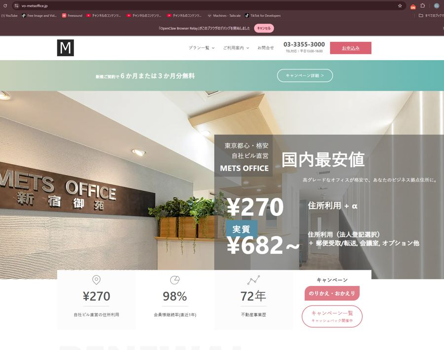

営業自動化・DX
営業自動化ツールで中小企業の売上を伸ばす2026年版
営業自動化ツールの導入で中小企業の業務効率化・売上向上を実現する方法を解説。CRM・メール自動化・ツール選定のポイントを2026年の動向とともに紹介します。

AI営業・営業支援
2026年最新|営業提案をAIで自動化する方法
営業提案の自動化にAIを活用する方法を2026年の動向とともに解説。仕組み・業種別の適性・顧客関係へのリスク・法務上の注意点まで整理します。

SEO
2026年版MEO対策の費用対効果を完全解説
MEO対策の費用相場とROIを業種別に解説。自社運用と代行の違い、CPA視点での投資回収期間、低予算でも効果を出す方法まで具体的に紹介します。

Web制作
ホームページリニューアル効果を2026年最新事例で徹底解説
2026年最新データでホームページリニューアルの効果を解説。売上・問い合わせ増加、SEO改善、UX向上のメカニズムと費用対効果の考え方を専門家が詳しく紹介します。

SNS運用
SNS運用代行の費用相場と効果を2026年版で解説
SNS運用代行の費用相場（月5万〜30万円）と効果が出るまでの期間、自社運用との比較、隠れコストや卒業戦略まで2026年最新情報で解説します。

SNS運用
インスタグラム集客方法2026年版｜今すぐ使える最新施策
2026年最新のインスタグラム集客方法を解説。Reels戦略・AI活用・ハッシュタグSEO・業種別施策まで、中小企業やフリーランスが今日から実践できる具体策を紹介します。

開業準備・DX
2026年版｜METSバーチャルオフィスの料金と選び方
METSバーチャルオフィスの料金プラン・特徴を徹底解説。個人事業主・法人設立時の住所選びで失敗しないチェックポイントと合わせて紹介します。

AI活用・Web制作
AIライティングツール比較2026年版ブログ活用術
2026年最新のAIライティングツールをChatGPT・Claude等の実例で比較。ブログ記事作成の効率化とSEO・著作権対策のポイントを解説します。

集客
2026年版｜中小企業のデジタルマーケティング成功事例
2026年最新の中小企業デジタルマーケティング成功事例を解説。低予算施策・データ活用・AI導入の実例からROI改善のポイントを専門家が紹介します。

AI活用・自動化
営業リスト自動作成ツール導入ガイド2026年版
営業リスト自動作成ツールの仕組み・メリット・選び方を解説。2026年に中小企業が導入を検討する際のポイントと注意点を専門家視点で紹介します。
開業準備・DX
2026年版｜個人事業主の開業準備チェックリスト
個人事業主として開業する際に整えるべき会計ソフト・ホームページ・集客導線を解説。確定申告ソフトの選び方から開業後の情報発信まで実務目線でまとめました。

Web制作
LP制作の成功事例に学ぶ中小企業の集客術2026
中小企業のLP制作で成果を出すポイントを2026年最新データと具体例で解説。ターゲット設計・CTA最適化・継続改善までチェックリスト形式で紹介します。
集客
2026年版｜個人事業主の集客方法完全ガイド
個人事業主向けに2026年の集客方法を解説。SNS・MEO・ホームページ・AI活用まで低予算で成果を出す具体策と注意点をまとめました。
SNS運用
SNS運用代行の費用相場2026年版｜中小企業ガイド
SNS運用代行の費用相場を2026年最新版で解説。月額料金の目安や業務範囲、費用を抑える方法まで中小企業の経営者向けに分かりやすくまとめました。
SNS運用・集客
個人事業主向けInstagram集客2026年完全ガイド
個人事業主がInstagramで集客するための2026年最新施策を解説。プロフィール最適化・リール活用・予約導線設計まで具体的に紹介します。

Web制作・集客
2026年版｜中小企業の成約率を上げるHP制作術
2026年、中小企業のホームページはデザインだけでは成約に繋がりません。高成約率を実現する設計原則と業種別施策、制作会社選びのポイントを解説します。

DX
中小企業DX補助金2026年最新ガイド|申請要件と活用法
2026年の中小企業向けDX補助金制度を解説。対象要件・補助率・申請の流れから採択のポイント、導入後の注意点まで専門家がわかりやすく紹介します。
AI活用・営業
2026年最新版｜中小企業のチャットボット導入事例5選
2026年最新の中小企業向けチャットボット導入事例と失敗パターン、実装フロー、ROIの考え方を専門家視点で解説。導入判断に役立つ情報をまとめました。
SNS運用
2026年SNSマーケティング戦略完全ガイド
2026年最新のSNSマーケティング戦略を解説。アルゴリズム変化・規制強化・AI活用・ショート動画・コミュニティ運用まで業種別の実践ポイントを紹介します。

MEO対策
2026年最新｜クリニックがGoogleマップで上位表示する方法
2026年最新のMEO対策で、クリニックをGoogleマップの上位表示させる具体的な方法を解説。基本設定から口コミ戦略、来院導線までまとめて紹介します。
SEO
AIライティングツールのSEO効果とは？2026年版
AIライティングツールは本当にSEO効果があるのか。機能比較・無料と有料の違い・2026年のGoogleアルゴリズム対応まで、中小事業者向けに専門家目線で解説します。
集客戦略・DX
2026年最新版!小規模企業の集客方法完全ガイド
2026年の小規模企業向け集客方法を徹底解説。AI活用・MEO対策・SNS運用など、限られた予算で成果を出す最新施策を専門家がわかりやすく紹介します。

AI活用
2026年のChatGPT営業活用｜成功事例と実装ガイド
営業マネージャー向けにChatGPTで営業効率を上げる実例と、すぐに始められるテクニックを紹介。提案文自動生成から顧客分析、初期接触最適化まで。
AI活用・DX
2026年版｜中小企業のAIチャットボット導入完全ガイド
2026年最新版。中小企業向けAIチャットボット導入のメリット・ROIの考え方、ツール選定、導入ステップ、失敗事例と対策までE-E-A-T視点で解説します。

DX
2026年最新版｜中小企業DX補助金の申請完全ガイド
2026年の中小企業向けDX推進補助金を制度概要から申請手順、業種別の活用事例、採択後の失敗パターンまで専門家目線で解説。自社が対象か判断できます。
AI活用
中小企業のAI導入事例2026年版｜失敗しない進め方
2026年、中小企業のAI導入はどこまで進んでいるのか。業務別の活用パターン、失敗しやすい落とし穴、予算に合わせた段階的な導入戦略までを専門的な視点で解説。
DX・営業
CRM導入で失敗しない2026年版｜中小企業の進め方
中小企業のCRM導入はなぜ失敗するのか。2026年の視点で、データ整備・業務プロセス設計・定着化までの正しい進め方と選定基準を解説します。
LP制作・Web制作
2026年個人店向けLP制作費用の相場｜5万円で始める集客ページ
個人店舗のランディングページ制作費用は5万～30万円が相場。テンプレート利用で低コスト化、業種別の具体例と効果測定方法を解説します。

AI活用
AI研修の自己負担が75%減に｜人材開発支援助成金の使い方【2027年3月まで】
中小企業がAI研修を導入する際、人材開発支援助成金を使えば経費の最大75%が助成されます。対象要件・申請の流れ・制度終了までに押さえるべきポイントを解説。

AI活用
中小企業のAI研修、失敗しないベンダー選び5つのチェックポイント
AI研修市場は価格が数万円〜数百万円まで乱立。比較基準があいまいなまま契約して失敗しないための5つのチェックポイントを解説します。
AI活用
見積書作成が3時間→10分に。AI活用で変わる中小企業の業務時間
見積書作成、問い合わせ対応の下書き、議事録作成…中小企業の日常業務にAIを組み込むと、どれだけ時間が減るのか。具体的な時短実例を解説します。

集客
2026年版|中小企業のWeb集客方法7選
2026年最新版。中小企業がすぐ実践できるWeb集客方法をSEO・MEO・SNS・リピート施策まで具体的に解説。予算別の始め方も紹介します。
Web制作
個人事業主向け格安HP制作ガイド【2026年】
個人事業主が格安でホームページを制作する方法を2026年最新事情で解説。費用相場・失敗しない業者選び・業種別の必要機能まで網羅的に紹介します。

アプリ開発・業種別
【2026年】エステサロンアプリ開発の費用・機能ガイド
エステサロン向けアプリ開発の費用相場・必須機能・開発期間を2026年最新情報で解説。予約管理から会員ランク制度まで、集客と業務効率化を両立する開発のポイントを紹介します。
アプリ開発
ピラティス会員証アプリの作り方【2026年】
ピラティススタジオの会員証アプリ導入方法を解説。QR認証・予約連携・NoCode開発の選択肢から移行時の注意点まで2026年最新情報でまとめました。
アプリ開発
2026年版パーソナルジム予約管理アプリおすすめ比較
パーソナルジム向け予約管理アプリの選び方と主要サービスを2026年最新の視点で比較。機能・料金・導入時の注意点を解説し、ClawTechの予約システム構築支援も紹介します。

アプリ開発・顧客管理
顧客管理アプリ開発の費用相場【2026年版】
2026年最新版。顧客管理アプリ(CRM)の開発費用相場を開発方式別・機能別に解説。保守運用コストや既製品との比較も網羅。

アプリ開発・会員管理
会員証アプリの作り方【2026年最新版】
会員証アプリの作り方を2026年の開発事情で解説。Flutter・ノーコード・セキュリティ設計まで、方式別のメリットと注意点を整理します。
アプリ開発・予約システム
個人店向け予約管理アプリ比較2026年版おすすめ
個人店向け予約管理アプリの選び方を徹底解説。開業時と移行時で異なる選定基準、機能・料金比較、決済連携や運用のコツまで2026年最新版でまとめました。
アプリ開発・予約管理
ホットペッパー脱却2026年版｜飲食店の生き残り戦略
ホットペッパー手数料の負担増に悩む飲食店向けに、自社サイト・MEO・予約システムで集客を自走化する2026年の実践的な脱却戦略を解説します。
アプリ開発・ビジネスモデル
2026年版｜サブスクアプリ開発の費用相場と内訳
サブスク型アプリの開発費用相場を初期費用・月額運用費・決済手数料まで解説。継続率を高めるKPI設計や法規制対応も専門家視点で整理します。

アプリ開発
2026年版：ホットペッパー手数料高騰対策と集客戦略
ホットペッパービューティーの手数料が高いとお悩みのサロン経営者必見。2026年に向けた具体的な費用削減策、集客効率化、自社集客戦略を徹底解説します。
アプリ開発
2026年版：エステ顧客管理アプリ開発費用相場と成功戦略
エステサロン向け顧客管理アプリ開発の費用相場を徹底解説。初期費用、月額費用、コスト削減策、導入効果まで、2026年の最新情報で事業成功を支援します。
アプリ開発
顧客管理アプリ自作・外注・SaaS比較【2026年版】
2026年を見据え、顧客管理アプリの自作、外注、SaaS導入を徹底比較。費用、開発期間、機能、運用まで、中小企業が最適な選択をするためのポイントを専門家が解説。

AI営業代行
中小企業向けAI営業代行導入事例2026 | 効果と注意点
中小企業向けAI営業代行の導入事例を徹底解説。2026年最新の成功事例から失敗事例、費用対効果まで網羅。導入検討の参考に。ClawTech
AI活用
2026年AI副業：自動化で月5万円稼ぐ最新戦略
2026年、AI副業で自動化して稼ぐ方法を徹底解説！ChatGPT、DALL-E 3等のツール活用、成功事例、注意点まで。ClawTechが副業成功を支援します。
AI活用
中小企業向けAIライティングツール2026年最新版
中小企業向けAIライティングツールを徹底比較！導入メリット、選び方、成功事例を解説。2026年に最適なツールで業務効率化と集客アップを実現。
AI活用
2026年版：AIライティングツール徹底比較！営業資料作成を効率化
営業資料作成を劇的に効率化するAIライティングツールを徹底比較！機能、料金、導入事例、選び方まで網羅。2026年最新情報で最適なツールを見つけよう。
営業
BtoB営業自動化 2026年最新戦略！成功の鍵
BtoB営業の自動化で2026年までに売上を最大化！最新ツール、導入ステップ、成功事例を徹底解説。ClawTechが貴社のDXを支援します。
AI活用
2026年版 BtoB営業戦略！AI導入事例と成功の鍵
BtoB営業戦略におけるAI導入事例を徹底解説。2026年に向けた最新トレンド、成功の鍵、導入ステップ、注意点まで網羅。リード獲得数増加、営業効率化を実現！
DX
中小企業向けデータ分析ツール2026年最新版！選び方と活用法
中小企業向けデータ分析ツール2026年最新版！選び方から活用事例まで徹底解説。無料ツール紹介や導入ステップ、成功の秘訣も公開。DX推進を支援します。

MEO
2026年版！Googleビジネスプロフィール運用代行の徹底比較
2026年を見据え、Googleビジネスプロフィール（GBP）運用代行の費用対効果を徹底解説。料金相場、選び方、成功事例、自社運用との比較まで網羅。中小企業・店舗オーナー必見！
集客
2026年最新！GoogleビジネスプロフィールMEO効果最大化
2026年のMEO対策はGoogleビジネスプロフィールが鍵！最新情報、効果測定、AI活用まで徹底解説。集客を最大化する秘訣をClawTechが伝授します。

自動化
【2026年版】リード獲得自動化の仕組み｜成功戦略とツール
リード獲得を自動化して売上アップ！仕組み構築のステップ、ツール選びのポイント、成功事例を解説。中小企業向け低コスト戦略も紹介。ClawTech
集客
【2026年最新】中小企業のリード獲得戦略｜成功の鍵は？
中小企業向けリード獲得戦略を徹底解説！予算・人材不足でも成果を出す方法とは？最新トレンド、成功事例、費用対効果まで網羅。2026年を見据えた戦略で、リード獲得を最大化！
Web制作
LP制作格安で効果を出す！2026年成功戦略
LP制作を格安で実現し、最大限の効果を出すための2026年最新戦略を解説。費用相場、選び方、効果測定まで網羅。中小企業・個人事業主必見！
Web制作
2026年版 LP制作の費用相場と効果を徹底解説！
LP制作の費用相場は？効果測定はどうすればいい？2026年の最新情報を徹底解説！費用対効果を高める戦略、制作会社選びのポイントもご紹介。ClawTechがLP制作を成功に導きます。
集客
【2026年最新】MEO対策の効果を最大化する戦略
MEO対策で集客効果を最大化！2026年最新戦略を徹底解説。Googleマップ上位表示、口コミ対策、SEO連携で店舗ビジネスを成功に導きます。
集客
【2026年最新】MEO対策で地域ビジネスを加速！集客戦略
2026年最新MEO対策で地域ビジネスを成功に導く！Googleマップ集客のコツ、費用対効果、成功事例を徹底解説。ClawTechが最適な戦略をご提案。
AI営業代行
【2026年版】AI活用で新規顧客獲得を最大化する方法
2026年、AIを駆使して新規顧客を効率的に獲得する方法を徹底解説。顧客セグメント、リード獲得、チャットボット、広告最適化、営業自動化まで網羅。事例や導入ステップ、注意点も紹介。

集客
2026年を見据えたオンライン集客術
2026年のオンライン集客はAI活用が鍵。SEO、動画、SNS、パーソナライズ戦略、自動化まで徹底解説。中小企業・個人事業主向け最新情報。
AI活用・営業
2026年版：AIで劇的進化！オンライン商談成功術
オンライン商談にAIを活用して成約率を最大化する方法を解説。ツール紹介から導入事例、注意点まで網羅。未来の営業戦略をClawTechが支援！
営業
オンライン商談効率化2026｜成果を爆上げする秘訣
2026年を見据え、オンライン商談を劇的に効率化する方法を解説。準備からフォローアップ、顧客体験設計まで網羅。ツール比較や課題解決策も。ClawTechが支援。
営業
2026年版｜営業自動化ツール徹底比較と成功戦略
2026年を見据えた営業自動化ツールの選び方と導入戦略を徹底解説。SFA、CRM、MAの違いから、成功事例、組織変革まで網羅。最適なツールで営業効率を最大化！
AI営業代行
【2026年版】営業自動化ツール徹底比較！選び方と導入成功の鍵
2026年に向けた営業自動化ツールを徹底比較！SFA/CRM、MA、営業支援ツールを網羅。機能、価格、導入事例から最適なツールを選び、営業効率を最大化しましょう。
自動化
【2026年版】営業自動化ツール徹底比較！最適な選び方
2026年最新！営業自動化ツールを徹底比較。SFA/MA/CRM連携、価格、導入事例、使いやすさを網羅。最適なツールを選び、営業効率を最大化しましょう。ClawTechが選び方を解説。
営業
2026年 営業効率化AIツール徹底比較
2026年最新版！営業効率を劇的に向上させるAIツールを徹底比較。選び方、導入事例、価格まで網羅。ClawTechが最適なツール選びを支援します。
AI活用
【2026年版】AI営業資料作成で成果爆増！劇的効率化
営業資料作成をAIで劇的に効率化！2026年に成果を出すためのAIツール活用術、導入ステップ、注意点を徹底解説。ClawTechの支援事例も紹介。
Web制作
【2026年版】美容室向け予約システム導入費用を徹底比較
美容室向け予約システム導入費用を徹底比較！種類別の料金体系、機能、導入事例、無料プランまで網羅。自社に最適なシステム選びで売上UP！ClawTechが最適なシステム選びをサポート。
SEO
2026年SEO上位表示戦略！ホームページ成功の鍵
2026年、ホームページSEOで上位表示を実現する方法を徹底解説！最新トレンド、キーワード戦略、テクニカルSEO、E-E-A-T対策まで網羅。ClawTechが成功事例を基に、具体的な施策をご紹介します。
DX
中小企業DX推進補助金2026年最新情報と申請攻略ガイド
2026年の中小企業DX推進補助金に関する最新情報を徹底解説！申請要件、スケジュール、採択事例、活用方法まで網羅。ClawTechが中小企業のDX推進を支援します。
SNS運用
中小企業のSNS集客戦略2026｜AI活用で成果を最大化
2026年に向けた中小企業のSNS集客戦略を徹底解説。AIを活用した自動化、ターゲット顧客層の明確化、効果的なコンテンツ戦略、広告運用まで、成功の秘訣を伝授します。
集客
【2026年】個人事業主向け最新集客方法｜成功戦略
2026年に個人事業主が成功するための集客方法を徹底解説！SEO、SNS、MEO、Web広告、AI活用まで、最新トレンドと具体的な戦略をご紹介します。
AI営業代行
2026年 テレアポAI代行で劇的効果！費用対効果を徹底解説
テレアポAI代行で2026年こそ劇的な効果を！コスト削減、効率化、成約率向上…導入効果を徹底解説。費用対効果や選び方、リスク対策まで網羅。ClawTechが成功事例をご紹介。
Web制作
【2026年版】Web制作費用の相場と内訳を徹底解説
2026年のWeb制作費用の相場を徹底解説。LP、コーポレートサイト、ECサイトなど種類別、規模別に費用を比較。費用を抑えるコツや見積もり時の注意点もご紹介。
集客
Web集客戦略2026：AIと顧客体験が鍵
2026年のWeb集客戦略を徹底解説。AI活用、パーソナライズ、動画、コミュニティ、Cookieレス対策まで。ClawTechが最新トレンドと成功事例を紹介。
Web制作
2026年版：個人事業主へのWebサイト制作費用の相場と注意点
個人事業主にWebサイト制作を依頼する際の費用相場を徹底解説！LP、コーポレートサイト、ECサイトなど種類別の料金、見積もり時の注意点、費用を抑えるコツまで網羅。2026年の最新情報をお届けします。
Web制作
2026年Webサイト制作 補助金獲得ガイド
2026年に使えるWebサイト制作補助金・助成金を徹底解説。申請条件、対象、申請方法、Web制作会社の選び方まで網羅。中小企業・個人事業主向け。
Web制作
【2026年版】ホームページリニューアル費用相場と成功の秘訣
ホームページリニューアル費用の相場は？内訳は？費用を抑えるコツは？成功事例は？2026年最新情報を徹底解説！ClawTechが費用対効果の高いリニューアルを支援します。
アプリ開発
2026年版：ネイルサロンの顧客カルテアプリ活用術
ネイルサロン経営者必見！2026年最新の顧客カルテアプリで、顧客管理の効率化、リピート率向上、売上アップを実現。選び方から活用術、DX推進まで徹底解説します。
アプリ開発
美容室リピーター激増！2026年最新管理アプリ徹底比較
美容室オーナー必見！2026年最新のリピーター管理アプリを徹底比較。顧客満足度向上から売上アップ、業務効率化まで、選定ポイントと活用術を解説します。
アプリ開発
2026年版：個人店向けサブスク型顧客管理システム導入ガイド
個人店経営者必見！2026年の最新サブスク型顧客管理システム選び方、メリット・デメリット、活用事例を徹底解説。業務効率化と顧客満足度向上で売上アップを目指しましょう。
アプリ開発
整体院予約・顧客管理アプリ最新比較【2026年版】
整体院の予約・顧客管理アプリ導入で業務効率化と売上アップを実現！2026年最新版の主要アプリを徹底比較。失敗しない選び方から活用事例まで、整体院経営者必見。
アプリ開発
個人店向け会員証アプリ開発費用相場【2026年最新版】
個人店の会員証アプリ開発費用相場を徹底解説。機能ごとの費用、開発方法別の比較、費用を抑えるコツ、導入メリット・デメリットまで。2026年最新情報。

AI活用
【2026年版】エステ・ピラティスの顧客管理アプリ導入ガイド｜ホットペッパー依存から抜け出す方法
エステ・ピラティス・パーソナルジムなど個人店がAIで顧客管理アプリを持つべき理由を解説。プラットフォーム手数料に頼らないリピーター獲得の仕組み作りとは。
SNS運用
2026年最新！Instagram集客戦略で売上を最大化
2026年を見据えたInstagram集客の最新戦略を徹底解説。リール動画、AI活用、UGC創出、ショッピング機能で競争優位を確立し、売上アップを実現します。
AI活用
中小企業が知るべきAI営業代行の費用相場と選び方【2026年最新版】
2026年最新情報！中小企業向けAI営業代行の費用相場を徹底解説。初期費用・月額・成果報酬型を比較し、費用対効果の高い選び方や注意点を専門家が紹介します。
集客
2026年最新！地域ビジネスMEO成功事例と集客戦略
2026年最新の地域ビジネスMEO成功事例を徹底解説。Googleマップ集客を最大化する具体的な戦略から、費用対効果の高い施策まで、地域ビジネスの経営者必見のノウハウを紹介します。
AI活用
2026年版：中小企業向けAIで業務効率化！
2026年、中小企業がAIで業務効率化を実現する具体的な方法を解説。ChatGPT、RPA、画像生成AI活用事例から導入ステップまで、ClawTechが徹底ガイド。
集客
リスティング広告で集客激変！2026年を勝ち抜く効果最大化戦略
リスティング広告で集客効果を最大化する方法を徹底解説。費用対効果を高める運用ポイント、成功事例、2026年の最新トレンドから、中小企業が成果を出す秘訣まで。ClawTechが豊富な実績に基づき、貴社のビジネスを加速させます。
Web制作
【2026年最新】格安Webサイト制作！テンプレート活用術
2026年版！Webサイトを格安で制作したい個人事業主・中小企業必見。テンプレート利用のメリット・デメリット、選び方、ClawTechのサポートまで徹底解説。
SEO
2026年最新版！中小企業向けSEO対策費用対効果最大化戦略
中小企業がSEO対策で費用対効果を最大化するための2026年最新戦略を解説。具体的な施策、費用対効果の測定方法、失敗しないための注意点まで徹底網羅。
DX
中小企業DX推進、2026年までの補助金戦略
中小企業のDX推進を後押しする補助金制度を徹底解説。2026年までの動向、申請のコツ、失敗事例から学ぶ教訓まで、ClawTechが実践的な情報を提供します。
Web制作
2026年最新版！ホームページリニューアル費用と最適なタイミング
2026年のホームページリニューアル費用相場、内訳、費用を抑える秘訣を徹底解説。最適なタイミングや失敗しない進め方、ClawTechの豊富な実績もご紹介します。
SEO
2026年を見据える中小企業へ！SEO対策の費用対効果を最大化
中小企業が2026年に向けたSEO対策の費用相場、得られる効果、失敗しないためのポイントを徹底解説。ClawTechの実績に基づき、費用対効果を最大化する戦略と具体的な施策をわかりやすくご紹介します。
DX
中小企業向け業務自動化ツール徹底解説【2026年版】
2026年を見据え、中小企業の人手不足や生産性向上を解決する業務自動化ツールを徹底解説。導入のポイントから成功事例、補助金情報まで網羅し、貴社のDXを強力に推進します。
SNS運用
個人事業主向けSNS運用代行ガイド【2026年最新版】
個人事業主がSNS運用代行を依頼するメリット・デメリット、費用相場、選び方を解説。2026年の最新トレンドを踏まえ、ビジネスを加速させるSNS戦略をClawTechが徹底解説します。

工務店
工務店がホームページを持つべき5つの理由【2026年版】
工務店・リフォーム会社がWeb集客を始めるべき理由を解説。実例データと費用感も紹介。

MEO対策
MEO対策とは？Googleマップで集客する方法を徹底解説
Googleマップ上位表示の仕組みと、すぐ実践できるMEO対策の手順を解説。

MEO対策
【2026年最新】Googleビジネスプロフィール登録方法完全ガイド
無料で始められるGoogleビジネスプロフィールの登録・設定を画像付きで解説。
AI活用
中小企業のAI活用事例5選｜業務自動化で月30時間削減する方法
AI導入で業務効率化を実現した中小企業の事例と具体的な活用方法を紹介。
Web制作
2026年版：ホームページ制作費用の相場と賢い選び方
制作費用の相場から失敗しない業者選びのポイントまで、初心者向けに解説。
Web制作
【2026年最新】LP(ランディングページ)の作り方｜初心者向け完全ガイド
コンバージョン率を高めるLPの構成・デザイン・制作手順を初心者向けに解説。
DX
中小企業DX成功の道標2026！事例と進め方を徹底解説
中小企業のDX推進、何から始める？成功事例に基づいた戦略的な進め方を解説。
AI活用
2026年版ChatGPT業務効率化術！プロが教える活用法
2026年もChatGPTは進化！業務効率化に役立つ活用法をメール・企画立案など事例満載で解説。

Web制作
【2026年】飲食店にHPは必須？集客を最大化する秘訣
飲食店経営者必見！2026年にホームページが必要な理由を徹底解説。集客、ブランディング、費用対効果まで。
SEO
【2026年版】SEO対策 初心者がやるべき事
SEO対策を始めたい初心者向けに、2026年にやるべきことを徹底解説！キーワード選定から内部対策まで。

SNS集客
2026年版！Instagram集客で成功する秘訣
2026年もInstagram集客は重要！中小企業・個人事業主向けに、最新トレンド、成功事例、費用対効果を解説。
補助金・DX
【2026年版】IT導入補助金でホームページ制作を成功させる！
2026年のIT導入補助金を活用してホームページを制作・リニューアル。対象、申請方法、業者選びまで解説。

集客
整骨院集客 2026年成功戦略｜最新Webマーケティング
整骨院の集客方法、2026年に向けた最新戦略を徹底解説！SEO、SNS、Web広告、地域密着型戦略まで網羅。

工務店
【2026年版】工務店HP集客成功事例｜Web戦略徹底解説
工務店向けホームページ集客の成功事例を徹底解説！SEO対策、コンテンツマーケティング、SNS活用まで。
Web制作
【2026年最新】LP制作の効果測定ツール完全ガイド
LP制作の効果測定で成果を最大化！Google Analyticsからヒートマップまで、目的別ツールの選び方と改善事例を紹介。

Web制作
【2026年】整骨院ホームページ集客成功の秘訣！
整骨院のホームページ集客を成功させる秘訣を徹底解説！SEO対策、MEO対策、コンテンツマーケティングまで。

DX・自動化
2026年版：業務自動化RPA、AIの違いとは？徹底比較ガイド
業務自動化を検討中ですか？RPA、AIの違いを徹底解説！導入メリット、デメリット、事例、選び方まで網羅。

Web制作
2026年版！リード獲得LPテンプレートと成功事例
2026年も使えるリード獲得LPテンプレートと成功事例集。構成要素、デザイン、コピーライティング、改善方法を解説。
自動化
【2026年版】LINE公式アカウント自動返信：設定方法を徹底解説
LINE公式アカウントの自動返信設定でお困りですか？初心者でも安心！2026年最新の設定方法をステップごとに解説。
AI活用・営業
2026年版｜AI営業代行の費用相場と効果を徹底解説
AI営業代行の費用相場は？導入効果は？2026年最新情報を徹底解説！費用体系の種類、ROI算出、サービス選定のポイントまで網羅。
SNS運用
2026年最新版！中小企業のSNSマーケティング成功事例集
中小企業向けSNSマーケティング成功事例を2026年最新情報としてご紹介。プラットフォーム戦略、低予算施策、分析ツール活用まで網羅。
営業
2026年版！インサイドセールス導入で売上爆増の秘訣
インサイドセールス導入のメリットを徹底解説！リード獲得数増加、営業効率向上、成約率UPまで。

DX・自動化
【2026年版】個人事業主向け事業自動化ツールおすすめ10選
個人事業主の業務効率化に！2026年におすすめの事業自動化ツールを厳選。RPA、会計ソフト、SFA/CRMから業種特化型まで。
MEO対策
【2026年版】MEO対策費用対効果を徹底解説
MEO対策の費用対効果を最大化する方法を解説。費用相場、KPI設定、業者選びの注意点、成功事例・失敗事例まで網羅。
AI営業
2026年 中小企業向けAI営業コスト削減術
中小企業の営業コスト削減にAIをどう活用？AI営業代行の費用対効果、成功事例、導入の注意点を解説。

集客
2026年版 中小企業Web集客戦略｜成功の鍵
中小企業向けWeb集客戦略を徹底解説！SEO、MEO、SNS、広告まで網羅。2026年に向けた最新トレンドと成功事例で売上UPを実現。

MEO対策
【2026年版】中小企業のMEO対策｜費用対効果を最大化
中小企業向けMEO対策の費用対効果を徹底解説！2026年の最新情報に基づき、具体的な施策、費用相場、効果測定方法を紹介。

AI活用
業務効率化AIツール比較｜中小企業が今すぐ導入すべき10選
無料〜月額3万円以内で使えるAIツールを徹底比較。業種別におすすめのツールと導入ポイントを解説します。

DX
中小企業DX推進ガイド｜2026年成功事例から学ぶ業務デジタル化
DX推進に成功した中小企業の事例を紹介。どの業務から着手すべきか、コストをかけずにDXを進めるロードマップを解説。